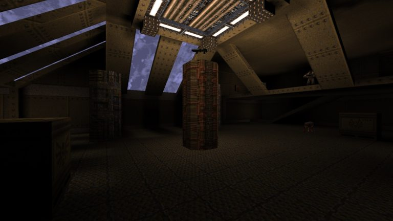
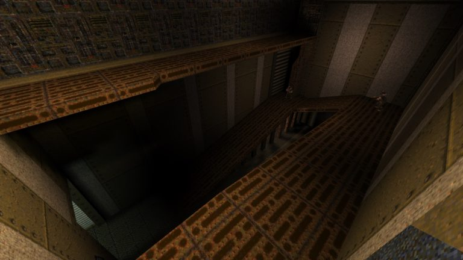
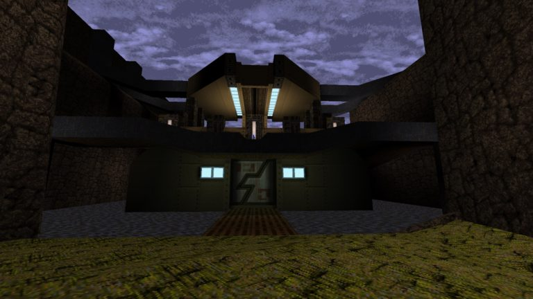
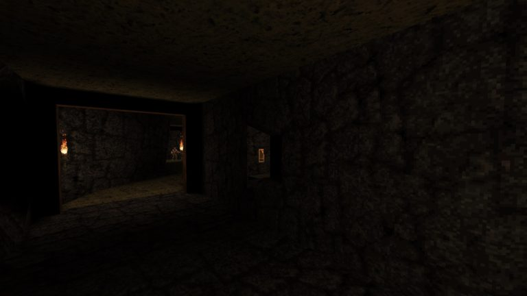
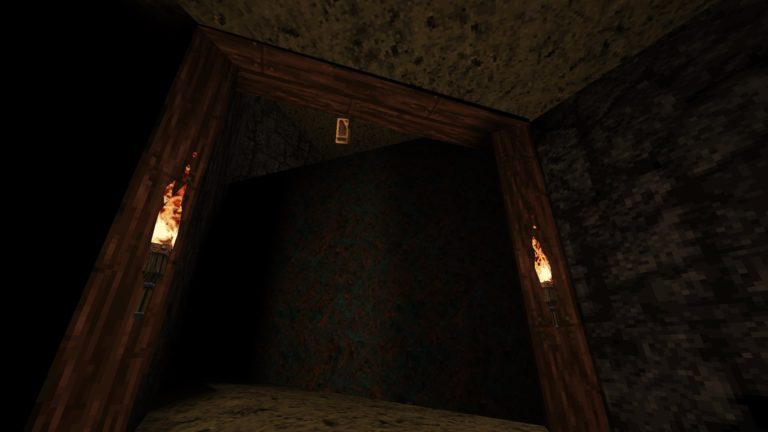
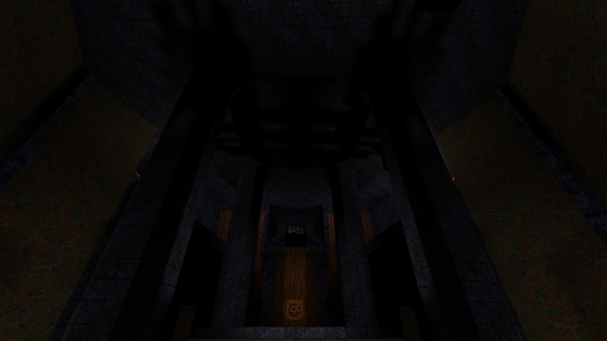
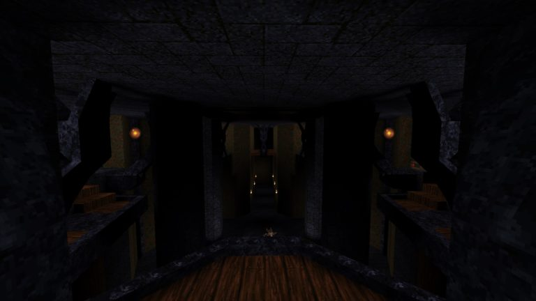
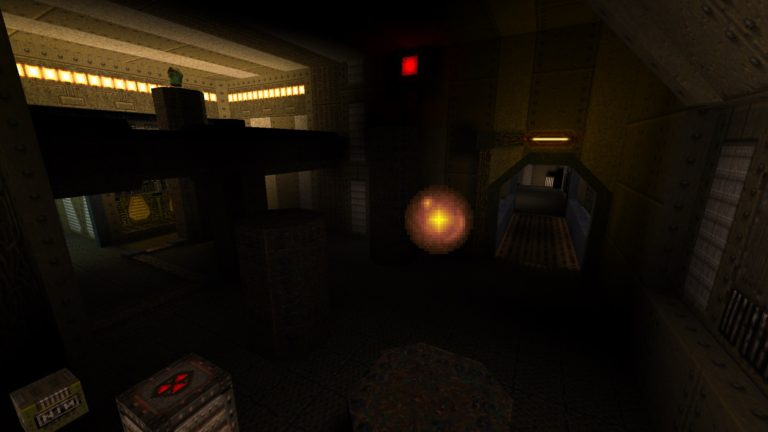
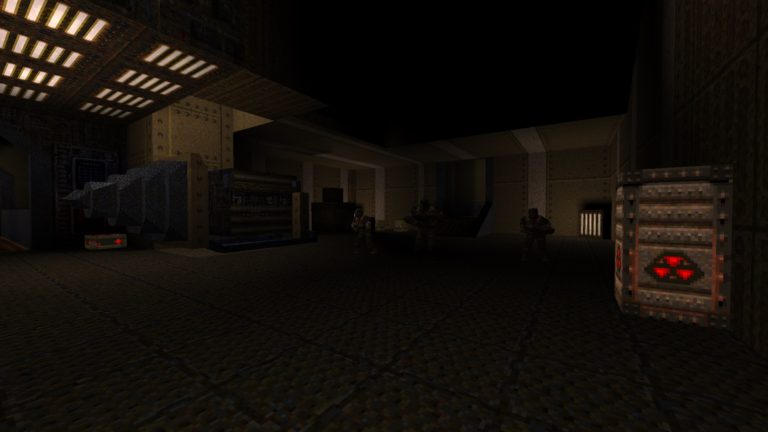
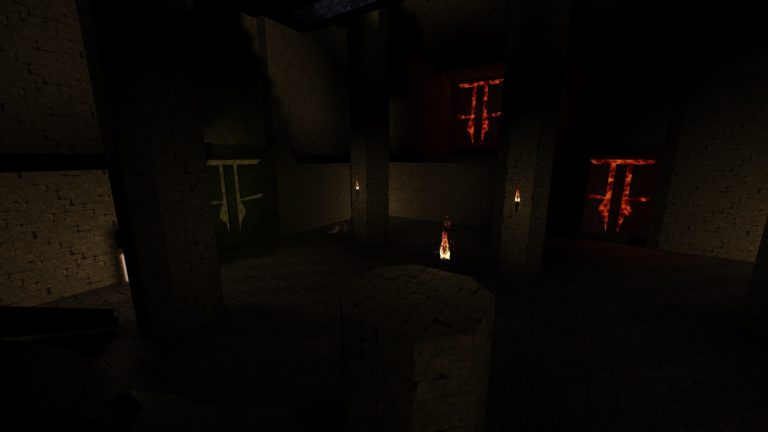

Designing My First Quake Map
I am not much of a level designer, let alone a Quake mapper, but with the hype around the release of TrenchBroom2 and the incredible maps still being made for the 22-year-old classic, I thought it would be a fun and educational experience to make one of my own.
My main goals were to learn more about the inner workings of Quake, learn about level design with some hand-on experimentation and practice, and to create a fun Quake map.
The resulting map is a bit inconsistent in terms of layout and aesthetics as it involved a lot of learning and experimentation along the way. Really, it's something of a test map and I made things up as I went along, but I’m happy with it nonetheless.
Context
In my mind, the most significant benefit of designing maps for a game with a clearly defined gameplay loop is that it allows you to focus on the relationship between the core mechanics and the map layout.
3D shooters are particularly well-suited to this kind of exercise, as their core gameplay is often straight-forward (move, point, shoot), with a heavy emphasis on 3D positioning and sightlines. This puts a lot of control in the hands of the level designer to craft unique play spaces.
 That Grenade Launcher is just out of reach.{kind=link}
Old school/arena shooters take this further by putting significant, game-changing resources and mechanics on the map itself. Health, armor, weapons, ammo, power-ups and so on. They can all be distributed throughout the map to dictate what resources players have when.
Few other genres offer such potentially significant variation in player experience from level to level.
A Sense of Scale
One of the first things that required a fair amount of experimentation to get handle on was level scaling. Spaces that seemed natural to me at first tended to feel very cramped in-game.
Quake feels short and wide for a variety of reasons. The player character’s movement speed is high compared to most modern games, but their jump height is low. Various enemy types also have some difficulty navigating narrower spaces.
 Wide ramps and tall ceilings.{kind=link}
Really, the only entities that demand much verticality are wizards (the white floating guys) and demons (the ugly monsters who like to leap in your face).
This puts very few real limitations on room height, especially with the ability to employ trigger_monsterjump (which, true to its name, makes monsters jump) to navigate ledges at various elevations.
Level Flow
One thing that is often associated with old school FPS level design is complex, labyrinthine layouts that require the player to scour the area for switches and keys to advance. This is difficult to execute well and can result in a lot of directionless wandering when intended paths aren't clear.
 Silver keycard visible at the start of the map.{kind=link}
So, I decided to make a really linear map that clearly communicates player goals and progress by revisiting the same areas at different levels.
Objectives are foreshadowed early to give the player a good idea of where they will be in a few minutes and once they've reached their destination, they often see early areas from a different perspective.
 First glimpse of the gold keycard.{kind=link}
Putting routes the player will follow later on higher ground initially out of reach also has the added benefit of cutting down on unavoidable back-tracking, since they can simply drop down on the way back. It's a one-way shortcut.
 Second view of the gold keycard and shortcut on the way back.{kind=link}
Lighting
The lighting system in the original Quake has a lot of character and potential for the dramatic, but taking advantage of that seems to be a delicate balance. It’s easy to make a level too dark to see what's going on or too bright and washed out. I probably erred on the side of “too dark,” if I'm honest.
Basic lights are spheres with a pretty steep fall-off, and a few properties that allow you to adjust their intensity and radius. You can also define a minimum light level (which doesn't look great) and a default sunlight level (light produced by any sky brushes) in the world spawn entity.
 Wall fixtures cast interesting shadows on the ceiling.{kind=link}
What I found most appealing aesthetically was a combination of high intensity lights casting shadows on interesting brush geometry and dim fill lights with a large radius to subtly brighten excessively dark areas. Often simply creating a physical light fixture and placing a light next to it was enough to cast interesting shadows.
 Looking down from above.{kind=link}
Creative Constraints
Probably the biggest appeal in designing maps for Quake is the unique limitations the game itself provides. I opted not to use any custom mod content in part for this reason.
Custom interactions in vanilla Quake are limited but flexible, relying on a simple trigger system. The core of this functionality is the “target” and “targetname” properties, which can be defined for any entity. Targetname is the name associated with a given entities entity (or entities) in question and the target is the targetname of a different entity which will be triggered.
 I wonder if any of these pistons move.{kind=link}
What an entity does when it is triggered varies. Enemies when triggered will attack the player. Lights toggle on and off. A trigger_teleport… Well, it teleports things.
Most interesting to me is the “func_door” entity, which in practice is a brush or collection of brushes that moves 360 degrees horizontally or up and down when triggered. By default, func_doors trigger when approached by a character (player or enemy), but if given a targetname, they must be triggered manually. This makes it very easy to create complex doors with many moving parts as well as plenty other creative applications.
 What does this machinery do?{kind=link}
Audio
Quake doesn't seem to offer much in the way of custom audio behavior, with the primary entities for that purpose being a handful of preset ambient emitters, which can be placed throughout the level and have a static drop-off.
The most persistent ambient sounds, like the wind in outdoor areas and the persistent water agitation sounds play automatically based on your proximity to any open area with sky or water brushes.
 Customs doors made of multiple brushes and some lava/slime.{kind=link}
Info_Intermission
Overall, I had a lot of fun and learned about Quake and level design in the process. It's fascinating to look at the nuances of the original id episodes and the work of experienced map makers in the community.
There is are so many details that go into these maps, some of which I didn't explore as much as I would like. In particular, the subtle and not-so-subtle ways that Quake maps change based on difficulty level is very cool, but also labor-intensive.
Modernized tools like TrenchBroom make this process more accessible than it has ever been.